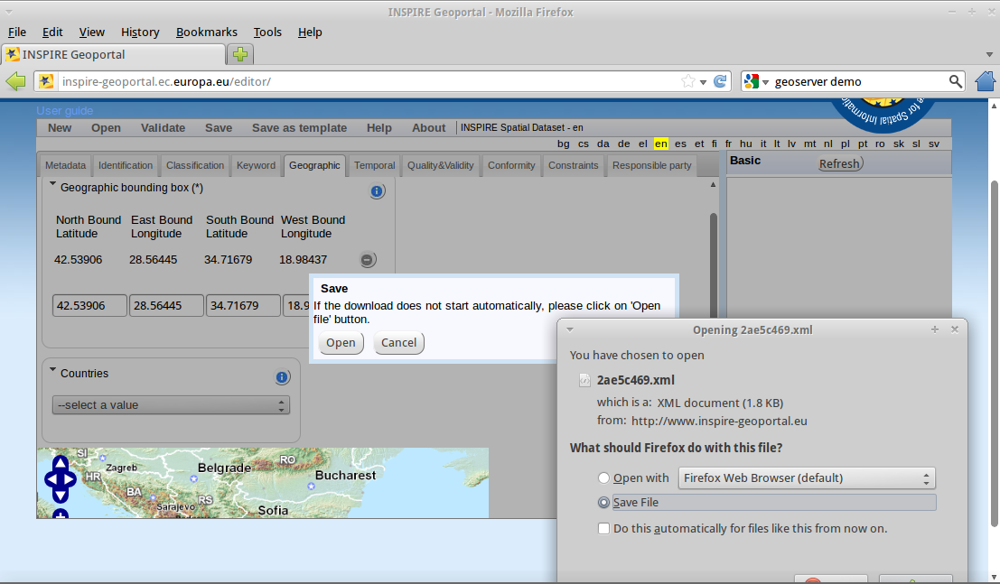

pycsw 快速入门¶
pycsw 是 OGC CSW 网络地理数据编录服务的 Python 实现。
pycsw 针对的是 CSW 网络地理数据编录服务标准第 10 款 HTTP 交换协议的 2.0.2 版。其开发始于 2010 年，正式发布于 2011 年。
pycsw 为发布和获取地理信息元数据提供支持。现有数据库的元数据可以通过 OGC:CSW 2.0.2 标准获取。
pycsw 为 开源软件 ，以 MIT 麻省理工开源协议发布，可运行与三大主要操作系统平台（Windows 、Linux 、Mac OS X）。
pycsw 在 OSGeo-Live DVD 已经安装。本文涉及的内容有：
- 安装 pycsw 软件
- 使用测试工具测试 pycsw 安装配置状态
- 编辑 pycsw 配置文件并使其配置在网页中显示
- 使用 INSPIRE 元数据编辑器或 GIMED 创建符合 ISO 19139 标准的 XML 元数据
- 在 pycsw 数据库导入创建的 XML 元数据文件
- 安装 QGIS CSW 客户端插件
- 在 QGIS 中通过 pycsw 编录服务查询数据
软件安装¶
系统要求¶
pycsw 要求以下软件支持：
- lxml （2.2.3 版或以上） 用于 XML 支持
- SQLAlchemy （0.0.5 版或以上） 用于数据库连接
- Shapely （1.2.8 版或以上） 用于空间查询可几何操作支持
- pyproj （1.8.9 版或以上） 用于坐标转换
从源码安装¶
在以下地址 下载 pycsw 或复制 SVN 库：
$ svn co https://pycsw.svn.sourceforge.net/svnroot/pycsw pycsw
注意 CGI 公共网关接口对安装的目录必须是开启的。例如在 Apache 中，若安装 pycsw 在 /srv/www/htdocs/pycsw``（URL 为 ``http://host/pycsw/csw.py），则在 httpd.conf 输入：
<Location /pycsw/>
Options FollowSymLinks +ExecCGI
Allow from all
AddHandler cgi-script .py
</Location>
Ubuntu/Lubuntu/Kubuntu 系统下安装¶
在 Ubuntu 或基于其的系统环境下安装 pycsw 可以使用位于 pycsw/etc/dist 的 OSGeo-Live 安装脚本：
$ cd pycsw/etc/dist
$ sudo ./install_pycsw.sh
该脚本会将 pycsw 及所需软件（Apache, lxml, sqlalchemy, shapely, pyproj）安装至 /var/www 。
OpenSUSE 系统下安装¶
在 OpenSUSE 12.1 安装 OBS 软件包（以 root 用户执行）：
$ zypper -ar http://download.opensuse.org/repositories/Application:/Geo/OpenSUSE_12.1/ GEO
$ zypper -ar http://download.opensuse.org/repositories/devel:/languages:/python/OpenSUSE_12.1/ python
$ zypper refresh
$ zypper install pycsw
对于更早的 OpenSUSE 版本，修改其中的``12.1``，例如改为``11.4``。对于以后的版本可以使用``Factory``。滚动发布的版本为``Tumbleweed``。pycsw 包含在 OpenSUSE 官方的 Application::Geo 库中。
测试工具¶
在 FireFox 中访问 http://localhost/pycsw/tester/index.html 或在 Web Services 应用组中选择 pycsw tester 可以启动软件环境测试工具。

在左侧下拉菜单中可以看到一系列已定义的 POST 请求。这些请求是以 XML 文档保存的。

例如，选择 “apiso/DescribeRecord” 这一项并单击 “Send” 按钮，可以在右侧面板得到返回的 ISO 标准的 Application Profile 记录：

选择 “GetCapabilities-SOAP” 并点击 “Send” ，将发送一个 SOAP 简单对象访问协议用于获取其功能。

同时，用户可以搜索特定的数据记录。通过选择 “GetRecords-filter-bbox” 并编辑坐标可以就一定的空间范围检索。

用户可以尝试测试其它各种测试项目。参考下面的内容可以做出更具体的测试。
服务功能（Capabilities）文档与配置¶
pycsw 的功能文档页面在 http://localhost/pycsw/csw.py?service=CSW&version=2.0.2&request=GetCapabilities 。
在该文档中包含着该服务的元数据。通过编辑 /var/www/pycsw/default.cfg 中 [metadata:main] 下的内容可以修改元数据。对于需要 INSPIRE Discovery Service 服务（见后述）的用户，请在 [metadata:inspire] 下编辑元数据并保证 enabled 为 true 。
详尽的配置说明请参考 pycsw 文档 。
创¶
European Open Source Metadata Editor (EUOSME) 创建¶
pycsw 服务下的空间数据集或数据服务的元数据可以通过 INSPIRE 元数据标准的开源实现，European Open Source Metadata Editor (EUOSME) 编辑器来操作。该程序可以在 http://inspire-geoportal.ec.europa.eu/editor/ 获得。其源码库位于 https://joinup.ec.europa.eu/svn/euosme/trunk 。
首先，用户需要选择各个选项卡，输入必需的元数据条目。这些信息包括数据所有者名称、关键字、数据源地址、数据覆盖地理范围（地名或坐标范围）等。

输入后点击“validation”按键可以测试数据是否符合 INSPIRE 元数据规范。
若测试通过，元数据可以存储为 XML 文档，可由文本编辑器或浏览器查看和编辑。

载¶
库¶
pycsw 支持以下数据库：
- SQLite3
- PostgreSQL
- MySQL
在 OSGeo-Live 已经配置了一个简单的 SQLite 数据库。它位于 /var/www/pycsw/data/cite 。
新建数据库操作：
$ cd /path/to/pycsw
$ export PYTHONPATH=`pwd`
$ python ./sbin/setup_db.py sqlite:////path/to/records.db
载¶
$ cd /path/to/pycsw
$ export PYTHONPATH=`pwd`
$ python ./sbin/load_records.py /path/to/records sqlite:////path/to/records.db
以上操作从 /path/to/records 载入全部 *.xml 文件，生成 records.db 。这个数据库可以以符合 OGC:CSW Table 53 的请求检索。
QGIS CSW 客户¶
单纯的 HTTP request/response 机制对用户不友好。有多款 CSW 服务客户端可以方便用户进行 CSW 查询，例如 INSPIRE Geoportal 和 GeoNetwork 。
本文使用 QGIS OGC Catalogue Service Client 这一插件。
插件安装：
$ cd ~
$ cd .qgis/python/plugins
$ svn co https://qgiscommunitypl.svn.sourceforge.net/svnroot/qgiscommunitypl/python/plugins/qgcsw/trunk qgcsw


{kind=link}